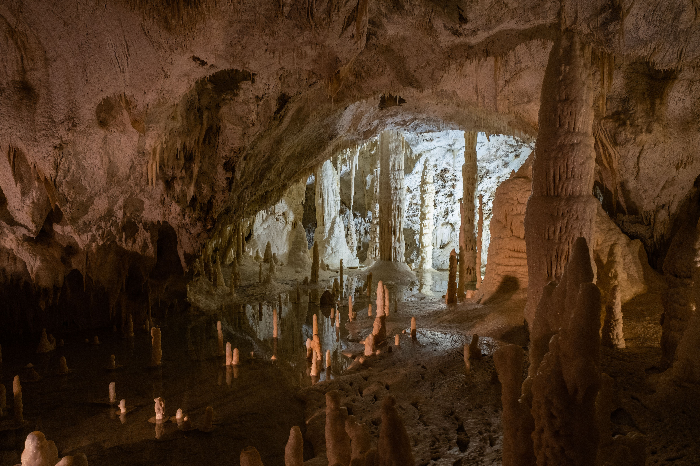
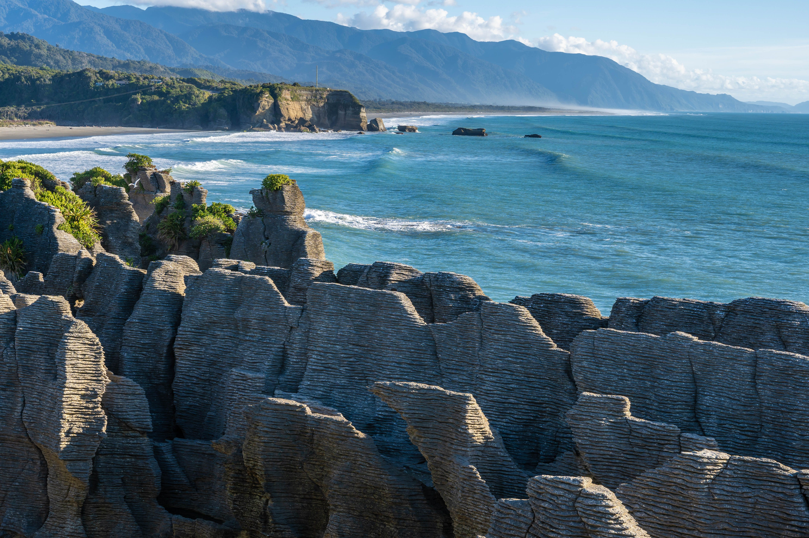
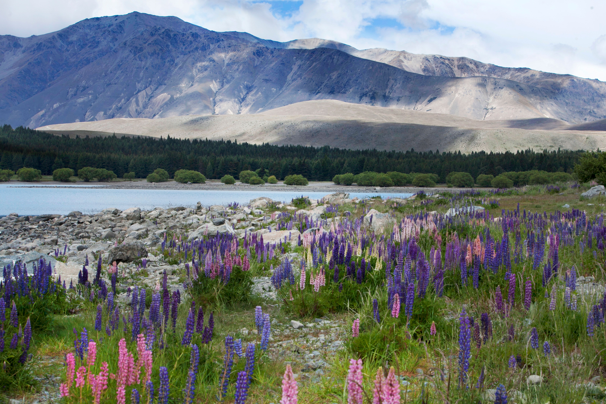
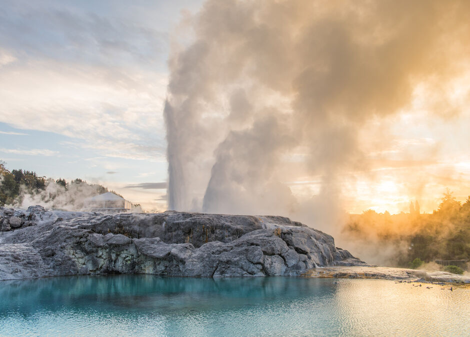
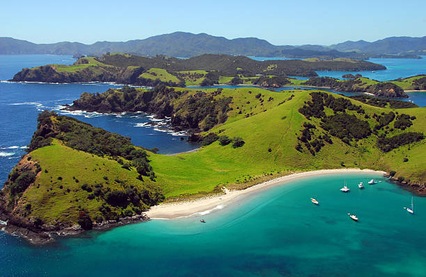
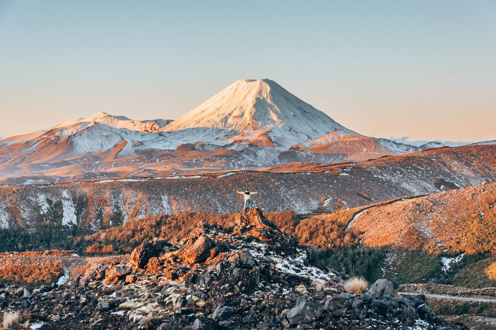
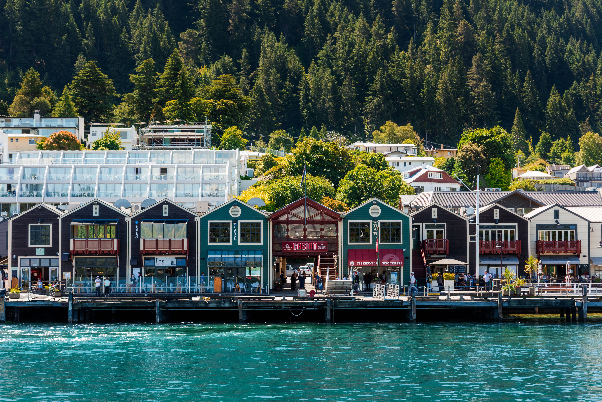
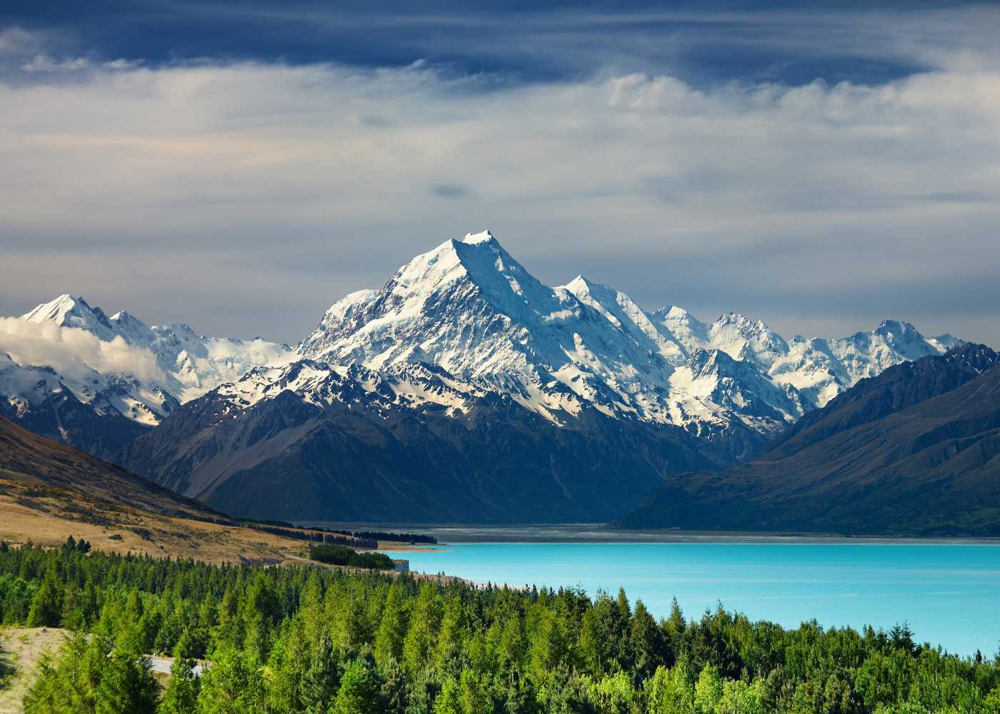

Scenic Spots
Honorable Mentions
Waitomo Caves
Famous for its glowworms, Waitomo Caves lets visitors drift through limestone caverns lit only by thousands of tiny bioluminescent lights clinging to the cave ceiling. Guided boat tours glide silently along an underground river beneath a glowing "starry sky," while more adventurous options include blackwater rafting — tubing through the dark caves in a wetsuit, complete with waterfalls and rock jumps. Above ground, the surrounding limestone karst landscape is riddled with sinkholes and cave systems worth exploring on foot. Located about a two-hour drive south of Auckland, it's an easy and unforgettable day trip for travelers based in the North Island.

Punakaiki (Pancake Rocks)
On the wild West Coast of the South Island, wind and wave erosion has carved these layered limestone formations into stacks that genuinely resemble towering stacks of pancakes. At high tide, especially with a strong swell running, the sea surges through blowholes in the rock, sending spray high into the air with a dramatic roar. A short, well-maintained loop walk from the car park takes visitors right along the formations and out to the ocean-side viewing platforms. It's a quick stop — usually 20 to 40 minutes — making it an easy addition to any road trip along State Highway 6 between Westport and Greymouth.

Lake Tekapo
This turquoise glacial lake in the Mackenzie Basin is famous for its vivid blue water — colored by fine rock flour ground down by nearby glaciers — set against a backdrop of the Southern Alps. The lakeside Church of the Good Shepherd is one of the most photographed small churches in the country. Tekapo also sits within a designated Dark Sky Reserve, one of the best stargazing locations on Earth, with guided night-sky tours and observatory visits available. In spring, fields of lupins bloom along the lake edges, drawing photographers from around the world.

North Island
Rotorua
Known for its geothermal activity, Rotorua sits atop bubbling mud pools, steaming geysers, and colorful silica terraces — most famously at Te Puia and Wai-O-Tapu Thermal Wonderland. The town is also a major center for Maori culture, offering traditional hangi feasts, cultural performances, and carving demonstrations at living marae. Adventure seekers can try Zorbing, mountain biking through the Redwoods forest, or luge rides overlooking Lake Rotorua. Be warned: the sulfur smell from the geothermal vents lingers throughout town, though most visitors quickly get used to it.

Bay of Islands
A subtropical playground of 144 islands off the northeastern coast, the Bay of Islands is one of New Zealand's top spots for sailing, dolphin watching, and sport fishing. The town of Paihia serves as the main base for boat cruises out to the iconic Hole in the Rock at Cape Brett. History buffs can visit the Waitangi Treaty Grounds, where New Zealand's founding document was signed in 1840. With mild weather nearly year-round, it's a popular escape for both swimming and relaxed coastal exploring.

Tongariro National Park
Home to the legendary Tongariro Alpine Crossing, widely regarded as one of the best one-day hikes in the world, this dual World Heritage park combines volcanic drama with deep Maori cultural significance. The 19.4-kilometer crossing takes hikers past the emerald-green Emerald Lakes and the active Mount Ngauruhoe, which served as Mount Doom in the Lord of the Rings films. Outside crossing season, the park also offers shorter walks, and Mount Ruapehu's ski fields operate in winter. Weather can change fast at altitude, so proper gear and a good forecast are essential.

South Island
Milford Sound (Fiordland)
Often called the eighth wonder of the world, Milford Sound is a dramatic fiord carved by glaciers, with sheer granite cliffs — including the towering Mitre Peak — rising straight from the dark water. Boat cruises glide past cascading waterfalls like Stirling Falls, and it's common to spot fur seals, penguins, and even dolphins along the way. The area is one of the wettest in New Zealand, which only adds to the drama, with rainfall feeding temporary waterfalls that tumble hundreds of meters down the cliff faces. The drive in along Milford Road is itself one of the country's most scenic routes.

Queenstown
New Zealand's self-proclaimed adventure capital sits on the shores of Lake Wakatipu, ringed by the jagged Remarkables mountain range. It's the birthplace of commercial bungy jumping and offers everything from jet boating and skydiving to skiing at nearby Coronet Peak and The Remarkables in winter. Beyond the adrenaline, Queenstown has a lively food and wine scene, with vineyards in the nearby Gibbston Valley offering tastings with mountain views. It's also a convenient base for day trips to Milford Sound, Glenorchy, and Arrowtown.

Mount Cook (Aoraki) National Park
Home to Aoraki / Mount Cook, New Zealand's tallest peak at 3,724 meters, this national park is a haven for hikers and mountaineers, with the Hooker Valley Track offering one of the most accessible glacier-lake views in the country. The turquoise, iceberg-dotted Hooker Lake sits at the trail's end, framed by the towering peak itself. As part of the Aoraki Mackenzie Dark Sky Reserve, the park also offers exceptional stargazing after dusk. Scenic flights and helicopter tours are popular for getting an aerial view of the surrounding glaciers and the Southern Alps.
